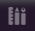
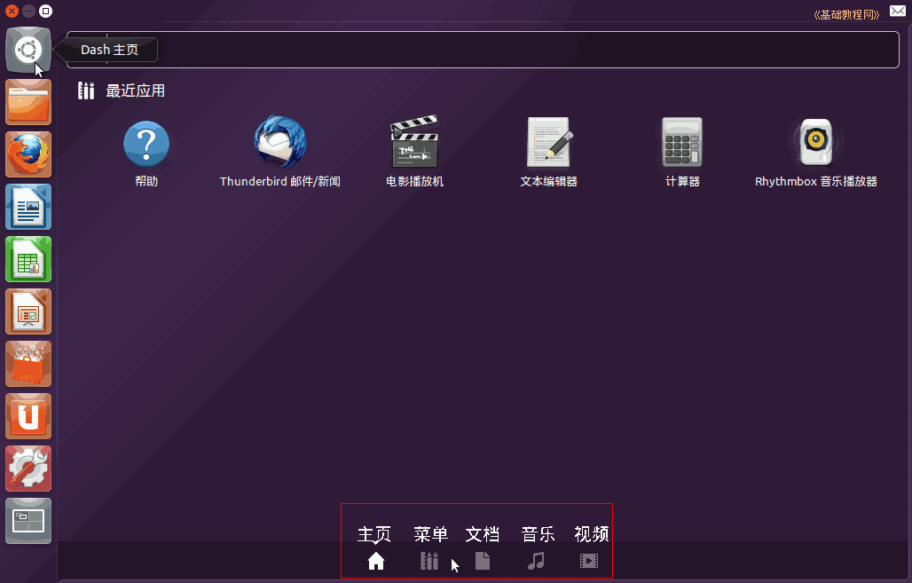
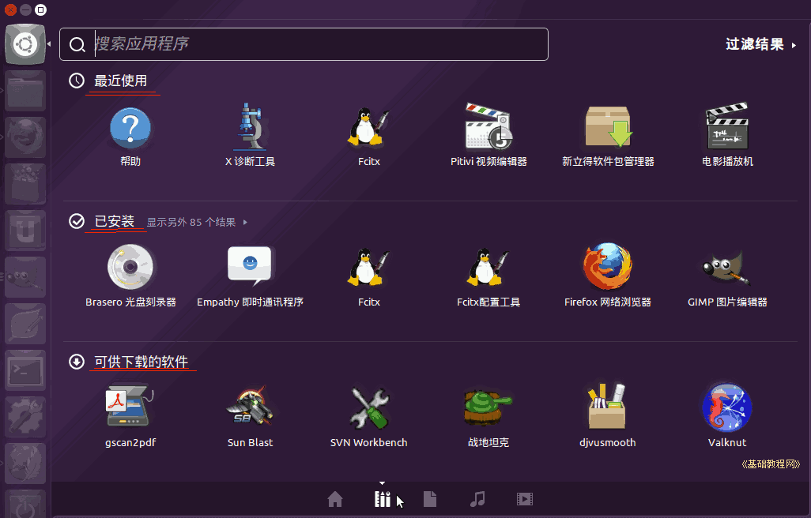
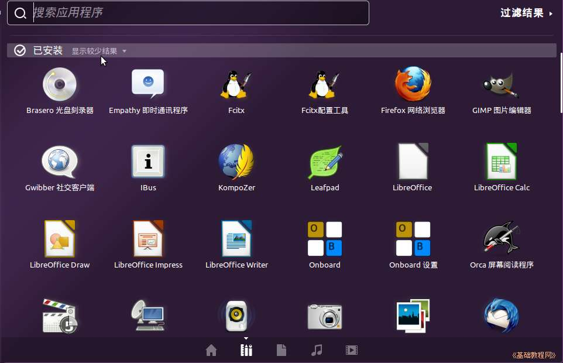
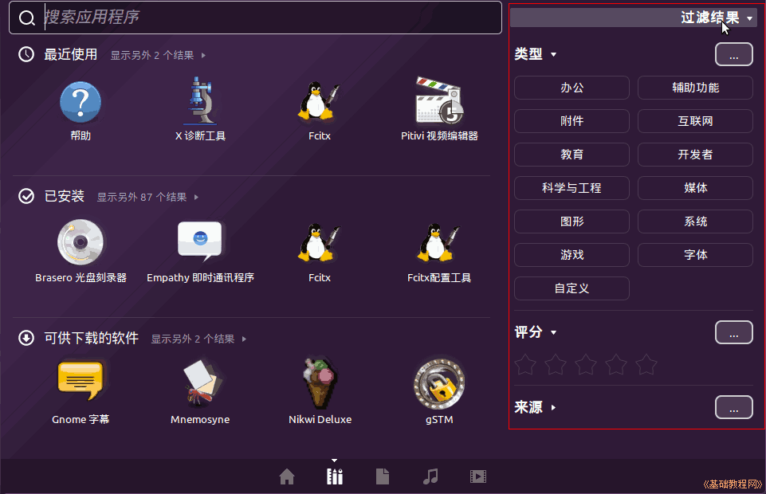
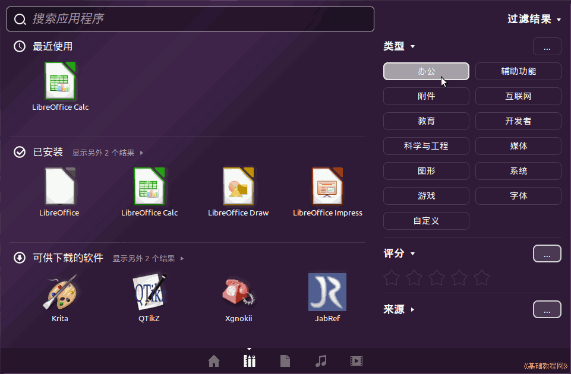
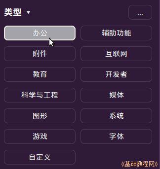

Ubuntu 入门操作指南
作者：TeliuTe 来源：基础教程网
十七、已安装的程序 返回目录 下一课左侧栏中只能放常用的程序，其他应用程序可以在主面板中找到；
1、所有程序
1）点击左上角主按钮，会出来主面板，在下边选择第二个所有程序标签；

2）在出来的面板中，最上边是最近使用的程序，第二行就是已安装的程序，第三行是还未安装的程序，右上角是程序分类的“过滤结果”菜单；

3）在第二行“已安装”的旁边，点击“显示另外××个结果”，会显示系统中已安装的所有程序，按字母顺序排列；

4）再点击可以折叠，显示较少的内容项，点击右上角的“过滤结果”菜单，可以显示程序分类；

5）点击一个分类，左侧就只显示这一类别的应用程序，再次点击回到所有程序；

6）程序分类有：办公、附件、教育、科学与工程、图形、游戏、辅助功能、互联网、开发者、媒体、系统、字体、自定义等；

本节学习了查找已安装程序的基础知识，如果你成功地完成了练习，请继续学习下一课内容；
本教程由86团学校TeliuTe制作|著作权所有
基础教程网：http://teliute.org/
美丽的校园……
转载和引用本站内容，请保留作者和本站链接。